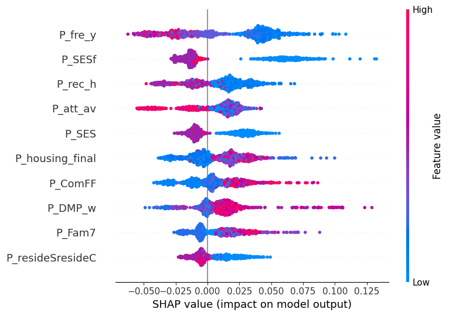
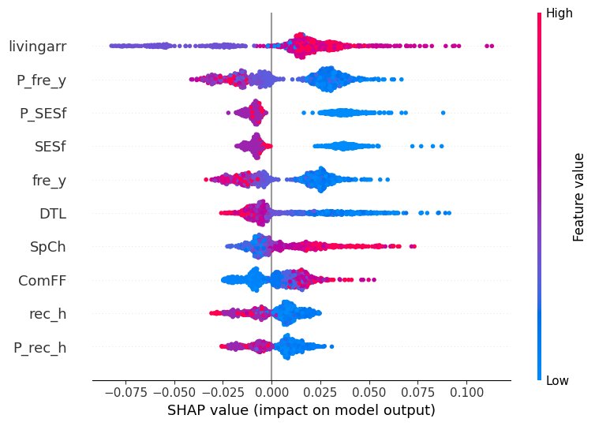
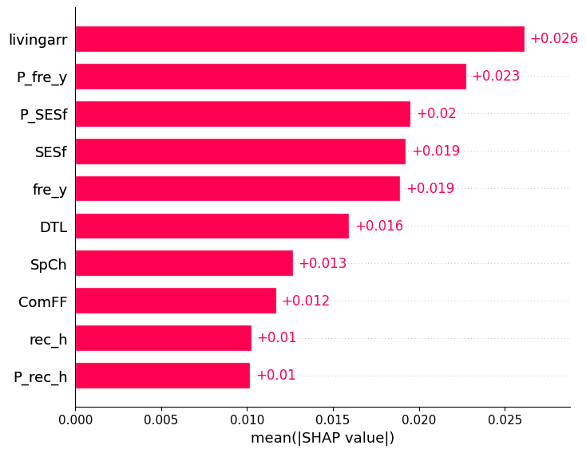

Summary
Fertility desires within a couple reflect characteristics of both partners. This project predicts them from dyadic survey data on 515 premarital couples using random forest models, and then examines which variables drive the predictions. Because partners share relationship-level information, cross-validation is grouped by couple so that both members of a pair always fall in the same fold, and every data-dependent step — oversampling, encoding, threshold selection, and the SHAP explainer itself — is fit inside the training fold. Shapley additive explanation values computed on held-out cases quantify how much each variable contributed to the predictions, and a couple-level cluster bootstrap tests whether adding partner-reported predictors improves prediction beyond a person's own characteristics. The manuscript is in preparation.
Background
Whether to become a parent is not an individually held preference. It is negotiated between two people, and in this sample the two members of a couple agreed on the dichotomized outcome in 89.7% of couples. That fact drives both the substantive question and the methodological design.
The substantive question is one of incremental validity: does knowing about someone's partner add predictive information beyond knowing about the person? Additive regression models for dyadic data can estimate actor and partner coefficients, but they answer a different question — the unique linear contribution of each term, holding the rest fixed. They cannot say whether partner information is redundant with actor information, and they assume in advance that influences combine additively when there is no reason to think they do.
Methods
Data and design
- Sample 515 Korean premarital couples, 1,030 individuals, both partners having passed strict data-quality screening.
- Outcome Desired number of children, dichotomized as none versus one or more. The minority class is 18.2%, so the no-information rate is .818 — which is precisely why accuracy is not the selection metric.
- Predictors 85 measures per partner spanning demographics and socioeconomic status, housing, family of origin, relationship history and structure, relationship quality, personality and attachment, gender-role and divorce attitudes, and financial habits. Three design matrices were built: actor-only (86 predictors), actor plus partner (166), and partner-only (80).
- Missing data Variable-level rather than case-level screening. Missingness was tabulated across all candidate predictors and two patterns separated — ordinary item nonresponse, and structural missingness from conditionally administered items running as high as 99.6%. Only predictors with zero missingness were retained, so no participants were lost. A partner pair was kept only if both members were complete, which keeps the two design matrices structurally identical.
- Dyadic restructuring The couple-wide file was reshaped into the standard pairwise double-entry layout: two rows per couple, each person appearing once as actor with their partner's variables attached as a partner block. This doubles the rows, which is exactly why the couple must become the resampling unit.
Leakage controls
These were engineered deliberately rather than inherited from a default pipeline, and they are the part of the design I would defend first.
- Couple-grouped, stratified cross-validation
StratifiedGroupKFoldwith 10 folds, grouped by couple so both partners always fall in the same fold, and stratified on the outcome because an 18% minority class gives unstable fold composition otherwise. Fold assignments are identical across models, so comparisons are paired. - The partner's own outcome is removed With 89.7% within-couple concordance it would trivially dominate any model that saw it.
- Couple-shared variables removed from the partner block Five variables whose within-couple responses are near-identical — relationship length (r = .998), living arrangement (r = .87), and three others — were dropped, because keeping both copies splits one signal across two columns and dilutes measured importance. This makes the incremental-validity test conservative against itself.
- Everything fits inside the training fold Oversampling, scaling, decision-threshold selection, and SHAP explanation are all fit on training data only. Category levels are pinned before splitting so every fold produces an identically ordered dummy matrix.
- Metrics are pooled out-of-fold Computed on the pooled predictions for all 1,030 individuals, each from a model that never saw them.
Models and class imbalance
- Four pipelines, each on all three predictor sets Random forest with decision-threshold adjustment; random forest with SMOTENC oversampling; balanced random forest with class-balanced bootstrapping; and an L2-regularized logistic regression baseline with standardized continuous predictors.
- Three imbalance strategies compared head to head rather than one adopted by default. SMOTENC was applied to the raw, pre-encoding training fold so that categorical columns are synthesized correctly instead of being interpolated across dummy variables.
- No hyperparameter search — on purpose Forests were grown with 1,000 trees and library defaults. With no tuning there is no nested-CV requirement and no selection bias in the out-of-sample estimate. The one tuned quantity is the decision threshold, chosen inside each training fold from the forest's out-of-bag decision function, so even threshold selection never touches held-out data.
- Model comparison inference A hand-written couple-level cluster bootstrap (2,000 resamples, resampling couples rather than individuals) gives the observed ΔAUC with a 95% percentile interval and a two-sided bootstrap p-value.
Interpretation
- Out-of-fold TreeSHAP A tree explainer is fit per fold on that fold's model and applied to that fold's held-out cases, then assembled into a full out-of-fold attribution matrix. This is harder and more correct than the common practice of fitting on everything and explaining everything: the attributions describe data the model did not train on.
- Grouped SHAP for one-hot variables Each dummy column is mapped back to its parent variable and the per-fold contributions are summed back to the original variable, separately for actor and partner versions. Without this, a variable with sixteen levels has its importance artificially diluted across sixteen columns.
Results
Prediction
The best model — random forest with SMOTENC, actor predictors only — reached AUC = .929 on pooled out-of-fold predictions, against .811 for the regularized logistic baseline. The forests recovered 71–72% of the minority class at 92–95% precision; the linear baseline recovered under half of it despite an accuracy of .834, which is the concrete reason accuracy was rejected as a selection metric.

livingarr) and relationship length (DTL) lead; axis labels are the
study's internal variable codes.Does the partner add anything?
Adding 80 partner predictors changed AUC by −.0045, 95% CI [−.0124, .0032], p = .26 — no improvement, and the direction held across all four pipelines, so the null is not an artifact of one estimator.
The interesting part is what that null does not mean. Three pieces of evidence show this is redundancy rather than irrelevance:
- The partner block alone — 80 predictors containing no actor information whatsoever — reaches AUC = .927, essentially matching the actor-only model's .929.
- Seven of the ten most influential partner-only predictors are the partner counterparts of actor-only top-ten variables.
- Within-couple correlations among the leading predictors average r ≈ .55–.58, and couples agree on the outcome 89.7% of the time.



Read together, these results say something a coefficient table would have hidden: a couple's fertility desire is better described as a shared property of the dyad than as two separately determined individual preferences that happen to correlate.